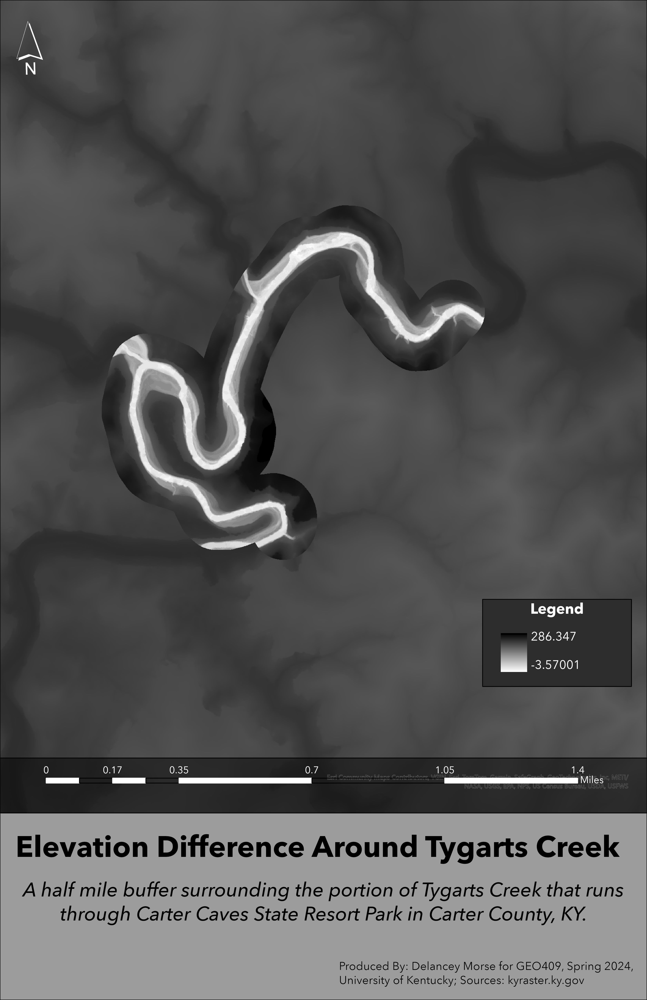

Interactive lidar map.
Carter Caves State Resort Park is located in Carter County Kentucky. It was dedicated as a nature preserve in 1981 to protect three different endangered species - the Indiana bat, mountain maple, and Canada yew. It is also home to more caves than anywhere else in Kentucky! There are many different walking trails, some more strenuous than outhers. It does, however, offer plenty of trails and attractions for wilderness beginners, even for very young children! There is golfing, camping, and lodge. They offer year-round cave tours, and even have two caves that you can take a self-guided tour in. All-in-all, it is not a state park that you want to overlook!
The goal of this project is to visualize the area in hopes of shedding some light on this wonderful State Park. Carter Caves is often overlooked because it sits amongst and underserved community, but it provides multiple different purposes, such as recreation and education.
Visualizations created from lidar data provided by KyFromAbove in ArcGIS Pro and Blender. Additional sources of information from kyraster.ky.gov, April, 2023.
Page and visualizations created by Delancey Morse for GEO 409, Department of Geography, University of Kentucky. Spring 2024.
Custom shaded relief using Blender
Elevation gradient surrounding Tygarts Creek